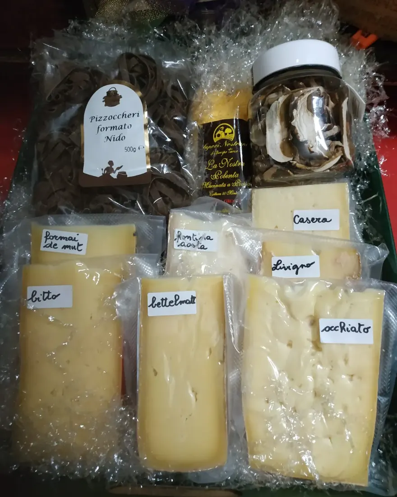
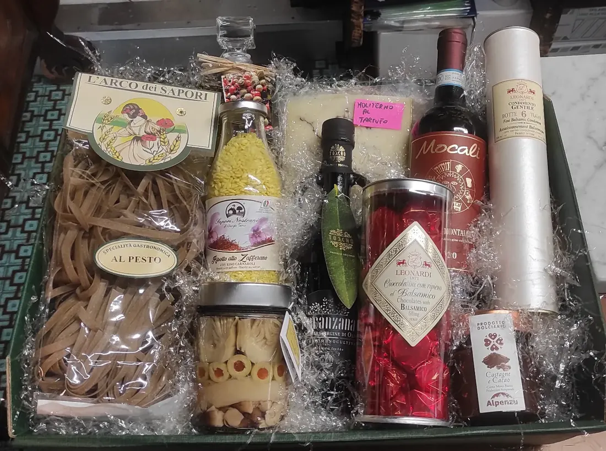
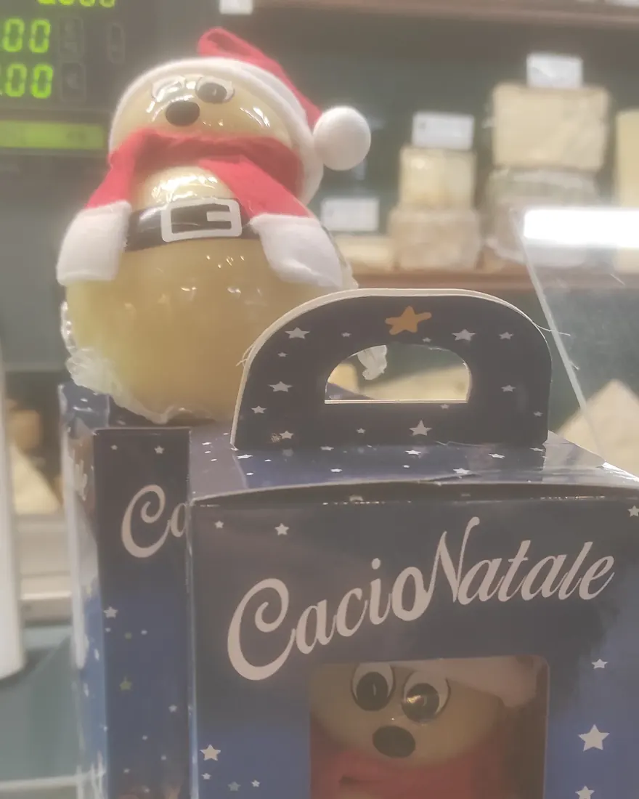
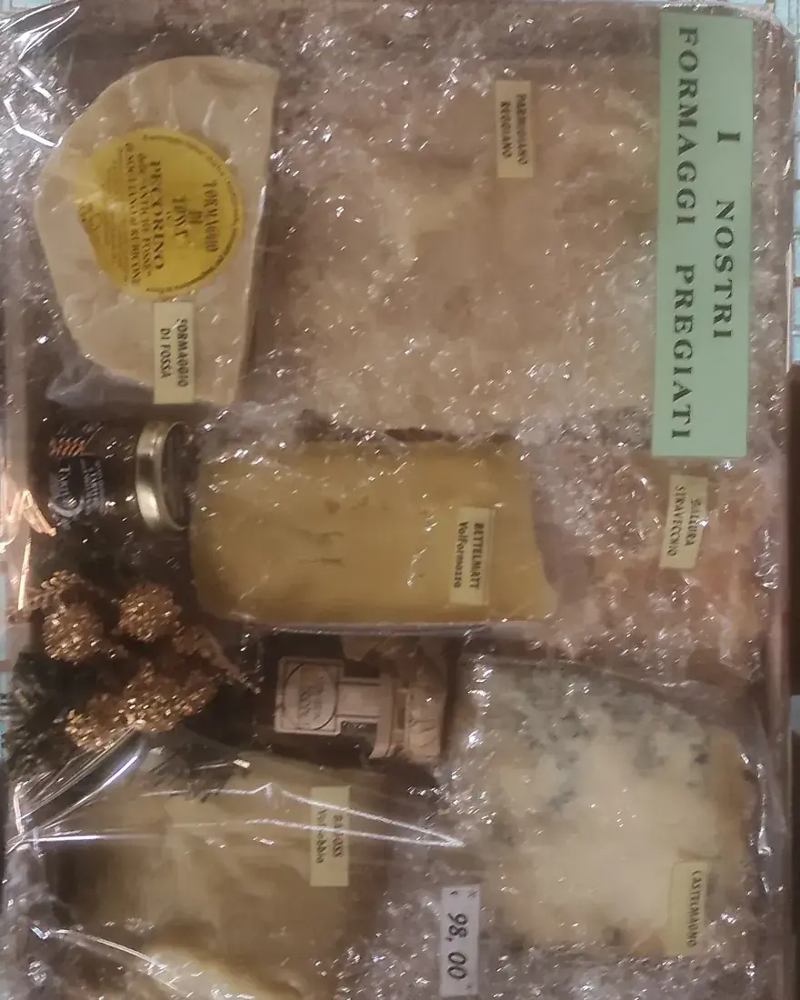
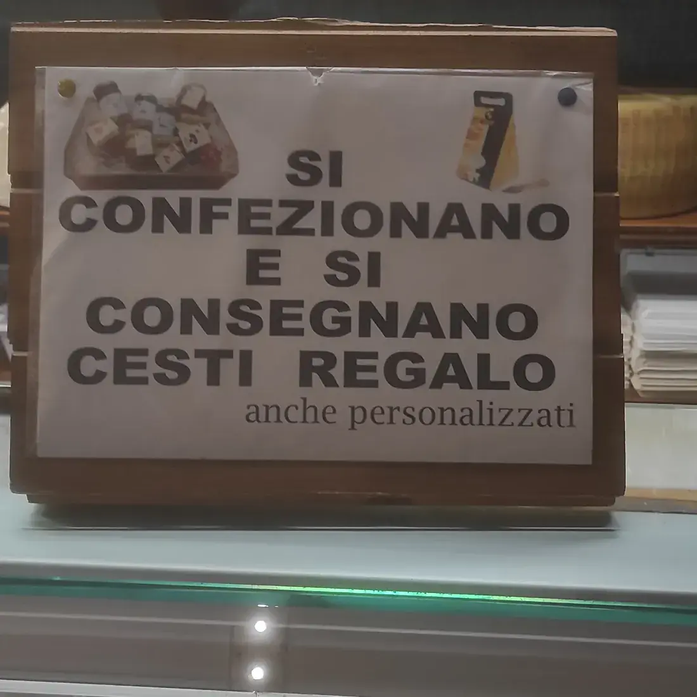

Le feste
Il periodo in cui la bottega si riempie di cesti. Formaggi delle feste, mostarde, dolci e un buon vino.
Cesti regalo
Tu ci dici il budget e chi lo riceverà, noi scegliamo formaggi e prodotti adatti. Li confezioniamo e li consegniamo, anche in quantità per le aziende.

Per ogni occasione
Ogni cesto è diverso: lo componiamo sul momento con quello che c'è di buono sul banco, e con quello che piace a chi lo riceve.
Il periodo in cui la bottega si riempie di cesti. Formaggi delle feste, mostarde, dolci e un buon vino.
Cesti in quantità, tutti uguali o su misura, con biglietto personalizzato e consegna.
Compleanni, anniversari, un grazie a chi ti ha aiutato. Anche piccoli, anche all'ultimo.
Quando sei ospite a cena: tre o quattro formaggi scelti con noi e la mostarda giusta.
I formati
Questi sono i formati che ci chiedono più spesso. Il prezzo lo decidi tu: dicci quanto vuoi spendere e componiamo il cesto di conseguenza.



Tre formaggi scelti al banco e una mostarda artigianale. Il pensiero giusto per una cena tra amici.
Formaggi d'alpeggio e del territorio, mostarda lombarda e pasta fresca. Un viaggio nella nostra regione.
Le chicche del banco, dai grandi stagionati ai francesi, con un vino in abbinamento.
Cesti in quantità per clienti e collaboratori, con biglietto personalizzato.
Dalla bottega
Nessuno è uguale all'altro. Ti mostriamo qualche esempio per darti un'idea.





Domande frequenti
Dipende da te. Ci dici quanto vuoi spendere e componiamo il cesto su quel budget, scegliendo i prodotti più adatti.
Certo. Puoi passare in bottega e sceglierli con noi, oppure lasciarci carta bianca dicendoci i gusti di chi lo riceverà.
Sì, i cesti si confezionano e si consegnano. Chiamaci per sapere zone e costi.
Sì, prepariamo cesti in quantità per clienti e collaboratori, anche con biglietto personalizzato.
Per un cesto singolo spesso basta poco. Sotto Natale e per gli ordini aziendali ti consigliamo di chiamarci con qualche giorno di anticipo.
Chiamaci o passa in via Italia 19: lo componiamo insieme.